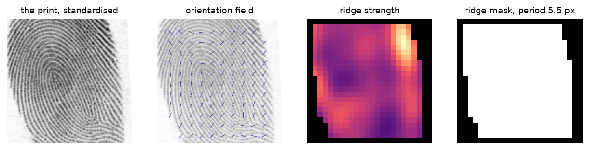
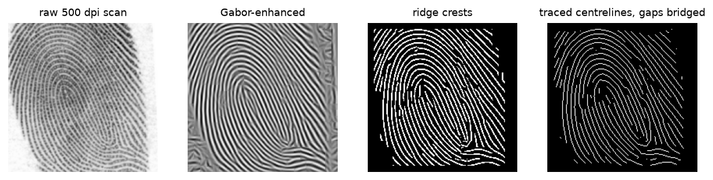
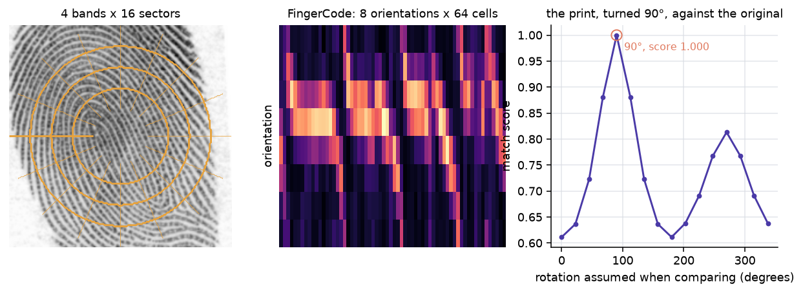
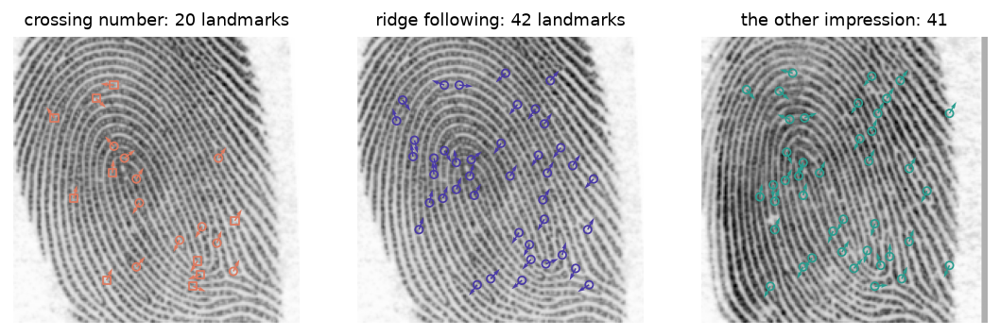
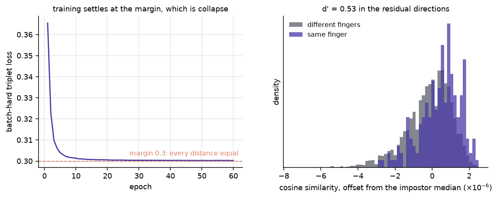
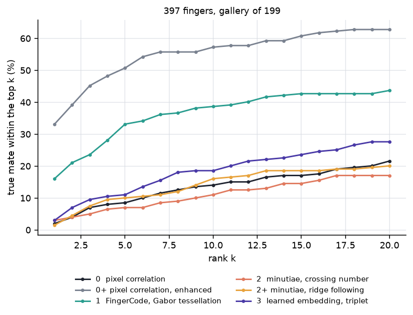

Fingerprint Algorithms: From Ridge Formation to On-Device Embeddings
Friction ridges are a prenatal pattern. Identification is the problem of turning that pattern into a comparable digital object — first as minutiae, now as a learned embedding bounded by the sensor.
Computer Vision
Biometrics
Machine Learning
Author
Ravi Kalia
Published
August 31, 2026
Fingerprint Algorithms: From Ridge Formation to On-Device Embeddings
You unlock a phone with your thumb a hundred times a week. It works when your thumb is wet, turned forty degrees off, pressed too hard, or only half on the glass. It fails when you offer a different finger.
The strange part is that the phone has no picture of your thumb. There is nothing in it to compare a photograph against. At enrolment it threw the picture away and kept something much smaller, and every unlock since has been a comparison between two of those smaller things.
So the interesting question is not “how do you match a fingerprint”. It is what do you keep, and what survives when the capture is bad. This post builds four answers to that question out of 397 real inked fingers from NIST, and scores every one of them against the same gallery of two hundred. One of the four is a modern metric-learning network. It does not win, and the reason it does not win turns out to be the most useful thing here.
1 A pattern nobody chose, not even your genome
Friction ridges form on the volar pads between roughly week 10 and week 17 of gestation. The basal layer of the epidermis is a stiff sheet growing on a soft foundation, and it is being compressed as the pad underneath it swells and then regresses. A stiff sheet under compression on a soft bed does not stay flat. It buckles, into a regular corrugation, at a wavelength set by the mechanics rather than by any instruction.
Kücken and Newell (2005) fit that picture to fetal pad geometry: ridge direction follows the lines of the compressive stress field, and the pattern type — loop, whorl, arch — falls out of the pad’s shape and timing. The same periodic stripes can be produced by a Turing reaction–diffusion system, which is why chemistry is the intuitive guess, but the model that matches the embryology is mechanical.
Where the ridge spacing comes from
For a stiff film of thickness \(h\) and modulus \(E_f\) bonded to a soft substrate of modulus \(E_s\), compression buckles the film at the wavelength that minimises the total energy — bending the film wants long waves, deforming the substrate wants short ones. The balance gives the classical wrinkling result
\[
\lambda = 2\pi h \left(\frac{E_f}{3E_s}\right)^{1/3}.
\]
What matters is not the constant but that \(\lambda\) depends only on a thickness and a stiffness ratio, so a patch of skin has a ridge period whether or not anything told it what period to have. Every filter in this post has to be tuned to that period, and measuring it per print is the first thing the code does.
Once the epidermis keratinises the pattern is fixed for life, scars aside. And identical twins, who share a genome, do not share ridge detail — the minute arrangement of endings and forks differs between them, and between your own two index fingers. That is what makes this a usable identifier: the thing being measured is a developmental accident, not an inherited plan, so it is effectively a per-finger random draw that then never changes.
A biological signature in the molecular sense is a short list of features that stands in for a condition. A fingerprint template is the same move performed on skin. The engineering problem is to make the standing-in deterministic, so that two captures of one finger reduce to the same object and two captures of different fingers do not.
2 397 fingers, twice each, and what it cost to standardise them
Everything measured here comes from one cache, so here is what is in it before anything is asked of it.
What it is. NIST’s MINEX III validation imagery: 801 raw 8-bit grayscale scans of inked fingerprint cards at 500 dpi, from the usnistgov/minex repository (commit dc57b22), released into the public domain as a US Government work. Retrieved 2026-09-12; the built cache is 20.3 MB, sha256 426f1ccf….
Who made it and why. NIST publishes it so that vendors’ minutiae extractors and matchers can be validated against a common set before certification. It exists to be a benchmark, which is exactly why it is safe to use as one, and why the results here are not a comment on anyone’s product.
The structure that makes it a test. Files are named <set><subject>_<position> — a001_02 is set A, subject 001, right index. Sets A and B are two separate impressions of the same finger. Two impressions is the minimum that makes identification measurable: enrol one, search with the other, and ask which enrolled finger comes back first. 397 fingers have both impressions, giving 794 images; three of the 801 scans have no mate and are dropped.
What this post asks of it. Rank-1 identification against a gallery of two hundred fingers, and an equal error rate for the one-against-one case. Nothing about latents, and nothing about live sensors — these are inked cards.
What a wrong answer costs. In the deployed version of this problem, a false accept opens someone else’s phone and a false reject locks you out of your own. Those two errors trade against each other, which is why one accuracy number is never enough and the tables here carry both.
Each scan is put on one scale and one centre by src/fetch_data.py, and that step makes a trade which bites one of the rungs later:
Code
# src/fetch_data.py -- standardise(), abridgedown = ridges.analyse(img).period # this print's own ridge periodzoom = period / own # resample every print to a common periodsource = img.astype(np.float64)if zoom <1:# Anti-alias before shrinking. Resampling a 10-pixel ridge period down to 6# without it folds the ridges back as high-frequency noise. source = ndimage.gaussian_filter(source, 0.5/ zoom)scaled = np.clip(ndimage.zoom(source, zoom, order=1), 0, 255).astype(np.uint8)
Two things vary between cards for reasons that have nothing to do with whose finger it is: how large the print was rolled, and where on the card it landed. Both are removed — every print is resampled to a ridge period of 6 pixels and cropped to a 192-pixel square centred on its inked area. Everything a matcher has to survive is left in: rotation, ink coverage, elastic distortion of the skin, damage, and how much of the finger the roll caught.
The cost is resolution. The source scans run a median ridge period of 11.5 pixels and the cache halves that, which keeps the whole print inside a small square — necessary, because the rungs that measure global ridge flow lose about four times the accuracy on a sensor-sized window at full resolution. Ridge flow survives the resampling comfortably. Individual ridge endings and forks do not, and that is a debt the minutiae rung pays in full.
One more thing about the data, because it explains a lot of the spread later: this imagery is not uniformly good. Over 80 randomly drawn prints, the ridge mask covers a median 56% of the frame, seven prints fall under 10%, and on three of them the analysis finds no reliable ridge region at all. NIST’s own quality grade correlates only about 0.56 with that coverage, so grade is informative and not decisive.
3 Everything downstream needs to know which way the ridges run
Before any method can describe a print, it has to answer a smaller question at every point: which direction do the ridges run here, and how far apart are they? Three of the four rungs are built on that answer, so it is computed once and shared.
Direction is the awkward part, because a ridge has no arrowhead. A ridge running north-east is the same ridge running south-west, so the two gradient directions \(\theta\) and \(\theta + \pi\) are the same answer. Averaging them naively cancels them out. The fix is to average the doubled angle, where the two agree instead of opposing:
That second line out is coherence: how single-minded the gradients in a block are. It runs near 1 on clean parallel ridges and near 0 on blank card, which makes it the natural measure of whether a block is worth trusting.

The print, its orientation field, the ridge-strength map, and the mask of blocks holding friction ridges. Drawn from a002_04, whose mask covers 75% of the frame. The orientation field curves around the core of the loop, which is the structure every later rung is reading.
With direction and period in hand, the enhancement step is a directional comb. A Gabor filter is a sinusoid wrapped in a Gaussian envelope — it has teeth at one spacing, running in one direction — and combing a patch of ridges along the direction they already run reinforces them, while noise that runs across the teeth is flattened:
with \(x'=x\cos\theta+y\sin\theta\) and \(y'=-x\sin\theta+y\cos\theta\). \(\lambda\) is the ridge period, \(\theta\) the local orientation, \(\sigma\) the envelope width. Use the wrong \(\theta\) and the comb fights the ridges instead of combing them, which is why the orientation field has to come first (Hong, Wan and Jain, 1998).
Code
# src/enhance.py -- enhance(): filter with the whole bank, then select per pixelbank = gabor_bank(img, analysis) # one filtered copy per orientationtheta = _fit(np.kron(analysis.theta, np.ones((BLOCK, BLOCK))), img.shape)idx = np.round(theta / (np.pi / ORIENTATIONS)).astype(int) % ORIENTATIONSreturn np.take_along_axis(bank, idx[None], axis=0)[0]

Left to right the same print gets legible: the raw scan is faint and unevenly inked, the Gabor bank recovers continuous ridges, the crest map reduces each ridge to a line, and tracing plus gap-bridging closes most of the breaks. The visible improvement from the third panel to the fourth is the repair of ink gaps, which matters in the third rung.
4 Rung 0: slide the two pictures over each other
The bottom of the ladder keeps everything and understands nothing. No ridge model, no landmarks, no training — just how well one image lines up with another once you allow it to slide.
Correlation at every possible shift costs one Fourier transform per image rather than one comparison per offset, so “try every alignment” is cheaper than it sounds:
Code
# src/pixels.py -- match_all(): best shift-aligned correlation, via the FFTprobe_f = np.fft.rfft2(probe)gallery_f = np.fft.rfft2(gallery, axes=(-2, -1))surface = np.fft.irfft2(gallery_f * np.conj(probe_f), s=probe.shape, axes=(-2, -1))return surface.reshape(len(gallery), -1).max(axis=1)
Sliding is allowed because the prints are centred on their inked area, which moves with how much of the finger each roll caught. Rotation is not allowed, because handling it here would mean re-transforming the probe at every angle — and being unable to afford that is precisely why the higher rungs describe a print in terms that do not change when the finger turns.
This rung runs twice: once on the raw grey image, once on the Gabor-enhanced one. The gap between those two is a clean measurement of what the enhancement alone is worth, with no descriptor involved.
5 Rung 1: comb the whole print, then count the energy cell by cell
Jain, Prabhakar, Hong and Pankanti (2000) turned the filter bank into a fixed-length descriptor, the FingerCode. Lay a polar tessellation over the print — concentric rings cut into wedges — and for each cell record how much energy each Gabor orientation puts into it. Concatenate, and you have a vector of fixed size no matter what the print looked like.
The elegant part is what happens when the finger turns. Rotating the print moves energy around the tessellation in a completely predictable way: the wedges shift round by some number of sectors, and the ridge directions shift by a matching number of orientation bins. So comparing against a rotated version of a print costs two array rolls instead of re-filtering a rotated image:
Code
# src/enhance.py -- rotations(): every whole-sector rotation of a FingerCodefor s inrange(sectors):# Sectors divide a full turn and orientations divide a half turn, so s# sectors of rotation is s * 2 * orientations / sectors orientation bins. bins =int(round(s *2* orientations / sectors)) % orientationsyield np.roll(np.roll(code, s, axis=2), bins, axis=0)
That comment is load-bearing. Rolling the histogram by half as far as the tessellation leaves every candidate but the zero-rotation one comparing a turned tessellation against unturned ridge directions, and a print rotated 90° then scores 0.78 against itself instead of 1.00.
The claim is checkable, so the third panel checks it. Turn a print ninety degrees, recompute its descriptor from scratch, and score it against the original at all sixteen assumed rotations:

The polar tessellation over the print, its FingerCode as an 8-by-64 energy map, and the match score of the same print turned 90° against the original at each assumed rotation. The score peaks at exactly 90° and reaches 1.000, against 0.611 for comparing the two descriptors unrolled. Rotation really is an array roll. The lesser bump near 270° is the ambiguity from earlier coming back: ridge direction has no arrowhead, so a half-turn puts much of the energy back where it started.
6 Rung 2: throw the picture away and keep the constellation
This is what an examiner means by a fingerprint, and what every automated system meant by one until the 2010s. Walk the thinned ridges and record only the places where something happens — a ridge stops, or a ridge splits — as a list of points \((x, y, \theta)\). The image is then discarded entirely.
Finding them is a local counting exercise. On a skeleton one pixel wide, walk the eight neighbours of a pixel in a ring and count how many times the ring flips between skeleton and background. In the middle of a ridge it flips twice. One flip is a ridge ending; three is a bifurcation:
Code
# src/minutiae.py -- crossing_number(): half the flips around each pixel's ringring = np.stack([np.roll(np.roll(skel, -dy, 0), -dx, 1) for dy, dx in _RING])changes = np.abs(ring.astype(np.int8) - np.roll(ring, -1, axis=0).astype(np.int8))return changes.sum(0) //2
Matching two such lists is the hard half, and the right way to picture it is constellation alignment. You have two star charts of the same patch of sky, taken with different cameras, at different rotations, with different amounts of cloud. Neither chart is complete and neither is quite to scale. You are not asked whether the two images look alike; you are asked whether the same arrangement of stars appears in both.
Registering constellations: Kendall shape and Procrustes distance
Treat the minutiae as labelled landmarks. Two impressions of one finger differ by a translation, a rotation, and — after standardisation — very nearly a scale. Quotient those out and what is left is the print’s shape in the sense of Kendall shape analysis: a point in a space where two configurations are the same point when some similarity transform carries one to the other.
For landmark matrices \(X\) and \(Y\), centred and normalised to unit size, the Procrustes distance is the residual after the best rotation:
\[
d_P(X, Y) = \min_{R \in SO(2)} \lVert X - Y R \rVert_F ,
\]
solved in closed form by the SVD of \(Y^\top X\). It is the right way to compare two constellations — if you already know which star corresponds to which.
That proviso is the whole difficulty. Procrustes needs correspondences, and correspondences are what a fingerprint matcher does not have. So this rung sidesteps the transform entirely: each minutia is described by its own neighbourhood in its own frame of reference — how far its neighbours sit, in what direction relative to the way it points, and which way they point. Such a description does not change when the finger rotates, so two prints are compared by matching descriptions rather than by searching for an alignment. That is the idea behind Cappelli, Ferrara and Maltoni’s Minutia Cylinder-Code (2010), in a smaller form.

The two extractors on one print, and the mate impression. Crossing numbers on a thinned binary image find 20 landmarks, clustered where the ink is heavy. Ridge following finds 42, spread more evenly across the pattern. The mate gives 41. More landmarks, better spread — and, as the next section measures, no more repeatable.
6.1 This rung measures the extractor, not the method
Here is the uncomfortable result, stated before the table rather than after it. On this cache, the minutiae rung identifies a few percent of probes. Plain correlation of the enhanced images — rung 0 with a comb run over it, no landmarks at all — identifies ten times as many.
That is not a fact about minutiae matching. Real automated fingerprint identification systems do well on exactly this imagery, which is why NIST published it. It is a fact about this extractor, and the way to show that is to measure the landmarks directly instead of arguing about the score.
The diagnostic: take two impressions of one finger and register them by their ridge flow, searching over rotation and shift for the alignment that best correlates the enhanced images. This hands the matcher the transform it would otherwise have to find. Then ask the only question that matters — what fraction of the landmarks in one impression have a landmark in the other within a ridge period of them?
Against an impostor floor — a different finger, registered the same way, whose points overlap by accident at this density — the crossing-number extractor lands 0.156 of its landmarks against a floor of 0.072. About a fifth against a tenth. A neighbourhood descriptor needs the neighbourhood to be stable, and at that rate almost every description is built from mostly different members. No scoring rule can recover a correspondence that was never there, which is why the log of attempts in src/minutiae.py — greedy one-to-one pairing, normalising by landmark count, voting on the implied rotation, a full rigid point-pattern search, three binarisations, a pixel-resolution orientation field, three thinning variants — moves none of it.
So the fix has to be a different class of extractor: ridge following with a quality map, in the manner of NIST’s MINDTCT, rather than crossing numbers on a thinned skeleton. src/minutiae_follow.py is that attempt. It finds ridges as crests — the line where the enhanced image is a local maximum measured across the flow, which is a statement about ridge geometry rather than about where a threshold fell — smooths along the flow to close ink gaps, bridges the gaps that survive, and scores every candidate by coherence, ridge strength and distance from the edge of the print:
Code
# src/minutiae_follow.py -- bridge_gaps(): join endpoints that face each othertowards = delta[i, j] / d# Each endpoint must be heading at the other, not merely near it.if towards @ tangent[i] < cone or (-towards) @ tangent[j] < cone:continuerr, cc = draw_line(int(ends[i, 1]), int(ends[i, 0]), int(ends[j, 1]), int(ends[j, 0]))out[rr, cc] =True
It behaves better on controls. On a synthetic ridge field containing no true minutiae, both extractors correctly return nothing. On a field carrying one deliberate ridge dislocation, the new extractor returns exactly that one landmark, where the old one returns three — the true one and two artefacts. It also finds more landmarks on real prints, and spreads them across the pattern instead of bunching them where the ink is thick.
And it does not help:
extractor
minutiae per print
genuine landing
impostor floor
lift
crossing number, thinned skeleton
18
0.156
0.072
2.17
ridge following, quality ≥ 0.15
22
0.145
0.093
1.56
ridge following, quality ≥ 0.35
13
0.100
0.077
1.30
ridge following, quality ≥ 0.55
6
0.084
0.054
1.56
The extra landmarks are not more repeatable, and because there are more of them they collide by accident more often, so the lift over the floor gets worse. Tightening the quality threshold trades count for nothing: genuine landing falls faster than the floor does.
The resampling did this, upstream of every extractor. At a 6-pixel ridge period a ridge ending is a few pixels of evidence, and both extractors are reading a feature the cache no longer resolves. Rebuilding at the source period of 11.5 pixels lifts repeatability by about a third — real, and nowhere near enough, and it costs the global ridge flow that the rungs which do work depend on. Both minutiae rungs are scored anyway, because a rewrite that fails is worth as much as one that works and costs the reader less to believe. Neither is evidence about minutiae matching as a technique.
7 Rung 3: let the network decide what to keep
The first three rungs are hand-built. Someone decided that ridge orientation matters, that a Gabor bank is the way to measure it, that endings and forks are the landmarks worth keeping. A metric-learning network is told none of that. It is given pairs and a rule about distances, and has to work out what to measure for itself.
The mental picture is a field of attractors. Every finger is a mass placed on the surface of a 128-dimensional sphere, and training pulls the two impressions of one finger into the same well while pushing different fingers’ wells apart. Nothing tells the network what a ridge is. It only ever learns that these two images must end up close and those two must not.
For an anchor \(a\), a positive \(p\) from the same finger, and a negative \(n\) from another, the triplet loss is
Picking triplets at random wastes almost every one of them, because most triplets already satisfy the margin and contribute no gradient. The batch-hard form (Hermans, Beyer and Leibe, 2017) takes the worst case in each batch instead — for every image, its own mate as the hardest positive and the nearest image of a different finger as the hardest negative:
With two images per finger the network would otherwise memorise the pair rather than learn what makes it a pair, so each batch is augmented with random rotation, shift, scale and a blanked-out block. Each of those stands for something the sensor does anyway: the finger lands at a different angle, presses harder, and covers a different part of the platen. The blanked block is the partial print.
ArcFace: putting the margin in the angle
The embeddings here are L2-normalised, so similarity is a dot product and all the information is in angle. ArcFace (Deng et al., 2019) takes that seriously. Start from softmax cross-entropy, drop the bias, and normalise both the weight vectors and the features, so the logit for class \(j\) becomes \(W_j^\top f = \cos\theta_j\). Then add a fixed margin \(m\)inside the cosine for the true class only, and rescale by \(s\):
Because \(\cos\) is decreasing on \([0,\pi]\), demanding \(\cos(\theta_y + m)\) beat the other logits is demanding that the true class win by an angular margin\(m\) — a constant-width band on the sphere, the same everywhere. A Euclidean margin is not that: the same distance means different angles depending on where you are. This is the loss behind most modern face recognition, and it is used for fingerprints unchanged.
This post scores the triplet version, because a margin in angle needs enough identities for the classification head to be meaningful and a few hundred fingers is not enough for the comparison to say anything.
Which is the caveat the whole rung rests on. This network sees a few hundred images of a couple of hundred fingers. The systems that beat hand-built features on this problem see millions of prints, and millions is not a nicety — with two impressions per finger, the nearest image of a different finger is usually closer than a print’s own mate, so the loss can be reduced faster by shrinking the whole embedding than by separating anything in it. The scoring section reports what that looks like when it happens.
8 The ladder, scored
Two rules keep the comparison honest, and both cost accuracy.
Nothing is scored on a finger it was fitted on. The fingers are split in two before anything runs. The network trains on one half; every rung, trained or not, is scored on the other. The hand-built rungs would score the same either way, which is the point — they get no advantage from the rule and the network gets no advantage from breaking it. The split is by finger, not by image, because a model that trained on one impression of a finger and was then asked to recognise the other would be answering a question no phone ever asks.
Every rung is charged for the ridge geometry it needs. Rungs 0+, 1 and 2 all start by asking which way the ridges run. Computing that once and sharing it is the only sane way to run the ladder, but attributing it to nobody would make three rungs look free, so the shared pass is timed once and added to each rung that reads it.
Everything reported comes off one object per rung — a score matrix, one row per probe, one column per enrolled finger, higher meaning more alike — which is what makes a pixel correlation, a Gabor descriptor, a point set and a learned vector comparable at all. Ties are resolved against the matcher, deliberately:
Code
# src/bench.py -- score(): ties count against the matcher, so silence scores lastgenuine = matrix[rows, truth]# Counting only strictly-better entries would give a matcher that returns the# same score for everything a rank of zero on every probe -- a perfect result# for saying nothing.ranks = (matrix >= genuine[:, None]).sum(1) -1
Two hundred fingers enrolled, two hundred probes, one impression each. Chance rank-1 is \(1/199 = 0.005\), so anything near half a percent is guessing.
Rung
What it keeps
rank-1
rank-5
median rank
EER
d′
search
0 pixel correlation
the image
0.020
0.085
63
0.431
0.35
12 s
0+ pixel correlation, enhanced
the combed image
0.332
0.508
5
0.251
1.15
35 s
1 FingerCode
flow energy, per cell and direction
0.161
0.332
33
0.370
0.58
23 s
2 minutiae, crossing number
a list of landmarks
0.030
0.070
110
0.482
0.08
25 s
2+ minutiae, ridge following
a list of landmarks
0.015
0.101
94
0.495
0.07
33 s
3 learned embedding, triplet
128 floats
0.030
0.111
51
0.407
0.53
1 s
The search column is the whole 199-by-199 comparison, with the shared ridge geometry charged to every rung that reads it. The network’s 144 seconds of training is not in it, because training happens once before any finger is enrolled.
The largest effect in the table is the oldest idea in it. The only difference between the first two rows is whether the images were combed with a Gabor bank before being correlated, and it moves rank-1 from 0.020 to 0.332 — a factor of sixteen, from a 1998 paper, with no descriptor, no landmarks and no training anywhere in sight. Enhancement is not a preprocessing detail that precedes the real method. On this data it is most of the method.
FingerCode buys portability, not accuracy. It lands at half the rank-1 of enhanced correlation. What it gets in exchange is a fixed-length template a few kilobytes wide, and rotation handled by two array rolls instead of not handled at all.
Both minutiae rungs are near chance, at 0.030 and 0.015 against 0.005, with d′ of 0.08 and 0.07 — which is to say the genuine and impostor score distributions are on top of each other and no threshold separates them. The ridge-following rewrite is the worse of the two, exactly as its repeatability gate predicted. Neither number is evidence about minutiae matching; both are evidence about extractors reading a feature this cache resampled away.
And the learned rung is the interesting failure. It ties the minutiae extractor on rank-1 at 0.030, and beats it on everything else: rank-5 0.111 against 0.070, median rank 51 against 110, d′ 0.53 against 0.08. But look at the last column. One second, against twenty-three to thirty-five for everything else — because at query time it does no ridge analysis, no filtering and no point matching. It encodes once and takes a dot product.
Be precise about that last column, because it is the reason phones work this way at all. The embedding is thirty-odd times cheaper to search and its template is 128 floats, and it achieves that while being a collapsed embedding: the loss settles at 0.300 against a margin of 0.3, which is what the hinge returns when every distance is equal, and per-dimension spread across prints comes out at \(1.7 \times 10^{-4}\). Soft-margin, a quarter of the learning rate, a smaller margin and half the batch were all tried; each settles at its own degenerate value and none recovers the spread. With two impressions per finger and two hundred fingers, shrinking everything is the only move that reduces the loss.
So the d′ of 0.53 is a real signal living in the residual directions of an embedding that has almost no extent. It is not a network that learned a little. It is a network that collapsed and still has a whisker of the answer in the rounding.

Left: the batch-hard triplet loss settling onto the margin, which is the collapse — equal hardest-positive and hardest-negative distances return exactly the margin. Right: genuine and impostor similarity, plotted as an offset from the impostor median because every pair sits within about \(10^{-5}\) of every other. The separation is real, and it is tiny.

Cumulative match characteristic: how often the true mate appears in the top \(k\) as \(k\) grows, one line per rung. The curve to read is the one at \(k=1\); the rest tells you how quickly a near-miss becomes a hit.
Two different questions, two different numbers
Rank-1 answers the search problem: one finger against a database, and the answer is a shortlist. This is a border crossing or a latent print against a criminal gallery.
EER answers the verification problem: one finger against one claim, and the answer is yes or no. The equal error rate is the threshold where as many genuine pairs are rejected as impostor pairs are accepted — a single summary of the trade you would tune in practice. This is your phone.
A rung can be respectable at one and poor at the other, because rank-1 only needs the true mate to beat the gallery for this probe, while EER needs one global threshold to work across all probes. d′ is the third column: how many impostor standard deviations separate the two score distributions, which says whether a threshold exists to be tuned at all.
9 Turn the probes, and the ranking changes
There is a quiet gift in that table, and it belongs to the two rungs that did best. Inked cards are rolled onto a form, so every print in this cache is roughly upright. Rung 0 and rung 0+ cannot search over rotation at all — they slide one image over another and that is the whole repertoire — so the data has been flattering them.
A finger on a phone lands at whatever angle it lands at. That is one flag away from being measurable, so it is cheaper to measure it than to argue about it:
Code
# src/ladder.py -- turn_probes(): every probe gets its own random anglerng = np.random.default_rng(seed)angles = rng.uniform(-degrees, degrees, len(probe.images))turned = np.stack([ np.clip(rotate_about_centre(img.astype(float), np.deg2rad(a)), 0, 255).astype(np.uint8)for img, a inzip(probe.images, angles)])
Enrol the same gallery, turn each probe by its own random angle up to \(\pm 30°\), and run the ladder again:
Rung
rank-1 upright
rank-1 turned
EER upright
EER turned
0 pixel correlation
0.020
0.015
0.431
0.461
0+ pixel correlation, enhanced
0.332
0.101
0.251
0.380
1 FingerCode
0.161
0.131
0.370
0.371
2 minutiae, crossing number
0.030
0.020
0.482
0.477
2+ minutiae, ridge following
0.015
0.030
0.495
0.487
3 learned embedding, triplet
0.030
0.020
0.407
0.427
Enhanced correlation loses two thirds of its accuracy and FingerCode barely moves, so the order swaps. Rung 0+ falls from 0.332 to 0.101; rung 1 goes from 0.161 to 0.131 and is now the best of the six. Look at the EER columns for the cleanest version of it: FingerCode’s goes from 0.370 to 0.371, and its d′ from 0.58 to 0.57. Rotating the finger costs the descriptor that was designed to absorb rotation almost exactly nothing.
The learned rung also holds up better than it scores — d′ 0.53 to 0.45 — which is not a mystery: it was trained on batches augmented with rotations up to \(\pm 25°\), so turned probes are inside what it was shown. It paid for that robustness in advance, with data.
The two minutiae rows move by three to six probes out of 199, which at those rates is noise rather than a finding. Nothing here rescues them.
So the ranking depends on a property of the capture, not of the algorithm. On upright rolled cards, comb the images and correlate them — the 1998 answer wins and nothing since has earned its keep. Let the finger turn, and the descriptor that treats rotation as an array roll takes over, at half the peak accuracy but without a cliff to fall off. This is the shape of the whole history in one table: later methods are not uniformly better, they are less dependent on the capture being kind.
10 The sensor decides what any of this can see
Everything measured here came off inked cards. The comparison on a phone is the same comparison, but the sensor decides what the representation is even allowed to contain — and the three sensors in shipping phones measure three different physical quantities.
Capacitive — Apple Touch ID
A silicon array measures electrical capacitance between the array and the live layer of skin under the epidermis. Ridges sit closer than valleys, so the image is 2D electrical contrast, not a photograph.
Depth: none. Template never leaves the Secure Enclave and matching happens there.
Ultrasonic — Qualcomm 3D Sonic
A piezoelectric transducer emits an ultrasonic pulse and times the echoes. Time of flight gives a genuine depth map of ridge and pore topography, through glass and through moisture.
Depth: yes. A printed 2D spoof has no volume, so its echo profile is wrong.
Optical — in-display
An illuminator under the glass photographs the finger and reads subsurface light scattering — how light diffuses back out of living tissue.
Depth: none. Liveness is a small network on scatter statistics, run locally, because the alternative is shipping fingerprint images off-device.
Capacitive
Ultrasonic
Optical
Physical quantity
capacitance to subdermal skin
acoustic time of flight
back-scattered light
Depth channel
no
yes
no
Through water / grease
poor
good
moderate
Defeats a flat printed spoof
weakly
by geometry
by scatter statistics, learned
Area captured
small, so partial prints are normal
small to large
medium
What the template may contain
2D contrast only
ridge and pore relief
2D image plus scatter
And this is where the arc bends towards learning, on an argument the scored ladder cannot make. A phone sensor sees a small, rotated, partly wet fragment. A forensic latent is worse: partial, smudged, overlapping another print, lifted off a curved surface. Minutiae extraction assumes there is a clean skeleton to walk, and on a latent there is not.
NIST ELFT (Evaluation of Latent Friction Ridge Technology) is the test that matters for that regime: open-set search of a gallery using latent probes, hit rates reported at fixed false-positive rates. It specifies no architecture and measures a black box. Systems that lead those tables combine spatial-domain enhancement — reconstructing ridge flow in the regions where it has been destroyed — with learned embeddings, sometimes embedding the latent and a rolled mate jointly. ELFT does not say which piece did the work, and the results here are not a claim about that regime. They are a claim about what each representation keeps.
11 What to keep, and when
Rung
What it keeps
Handles rotation
Survives a partial print
Template
Needs training data
0 pixel correlation
the whole image
no
poorly
the image
no
0+ enhanced correlation
the combed image
no
poorly
the image
no
1 FingerCode
energy per cell, per direction
yes, as an array roll
moderately
~4 kB, fixed
no
2 minutiae
a list of \((x,y,\theta)\) landmarks
yes, by construction
well, in principle
tens of points
no
3 learned embedding
whatever separates fingers
only what it was shown
well, if trained for it
128 floats
a great deal
The ranking in that table is not the ranking in the scores, and the reasons are specific rather than damning. The minutiae rung is reading a feature this cache resampled away, and it would be a different rung on 500 dpi originals. The learned rung is reading a few hundred prints where it wants millions, and it would be a different rung inside a phone vendor with a data pipeline. Only the two middle rungs are near what their method can do, and they are the two that scored.
Which returns to the question this started with. Keeping the picture works startlingly well — 0.332 rank-1, better than everything else here — right up until the finger turns, and then it is 0.101. Keeping a measurement of the flow is blunter at its best and costs 0.001 of its equal error rate to a thirty-degree turn. Keeping landmarks is the densest choice and the most fragile, because it presumes the capture was good enough to find them, and on a cache resampled to a 6-pixel ridge period it was not. Keeping a learned vector moves the fragility into the training set, where it stops being a property of the algorithm and becomes someone’s data-collection budget — and buys, in exchange, a search that costs one second instead of thirty-five.
None of those is the best representation. Each is the best answer to a different question about the capture, and the sensor is what decides which question you are being asked.